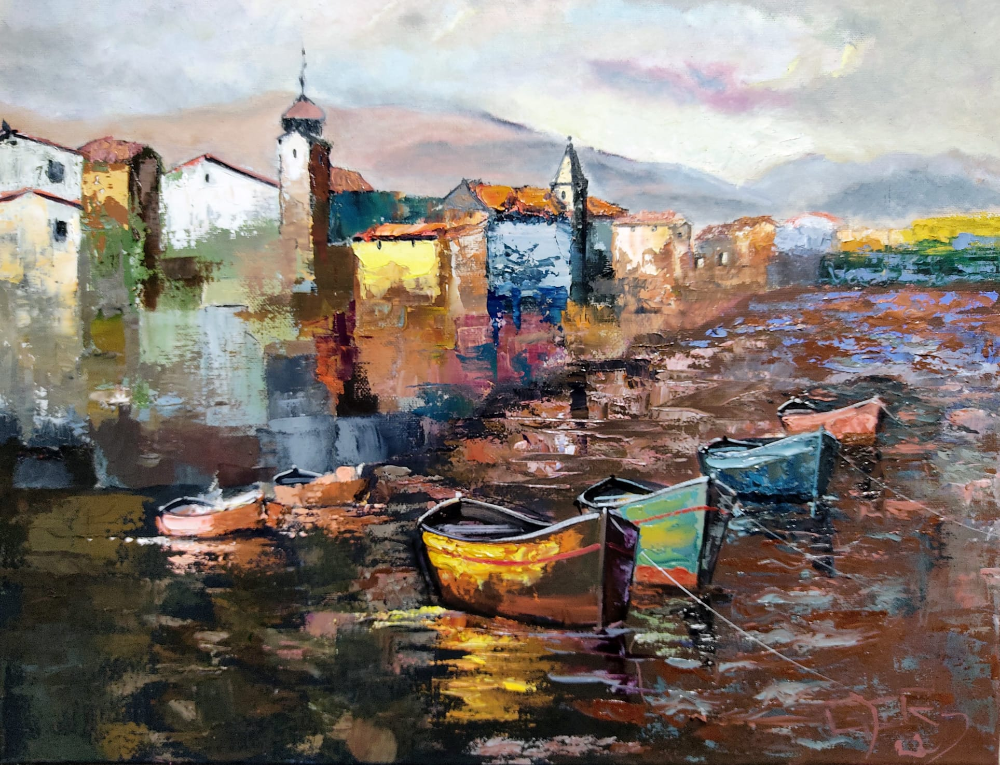
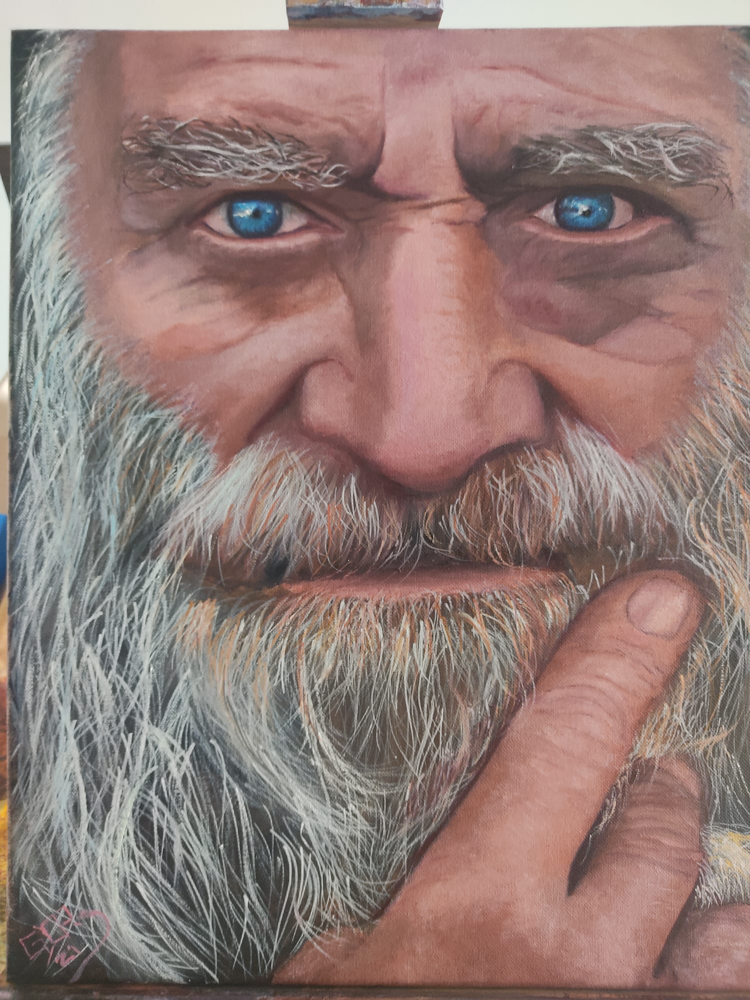
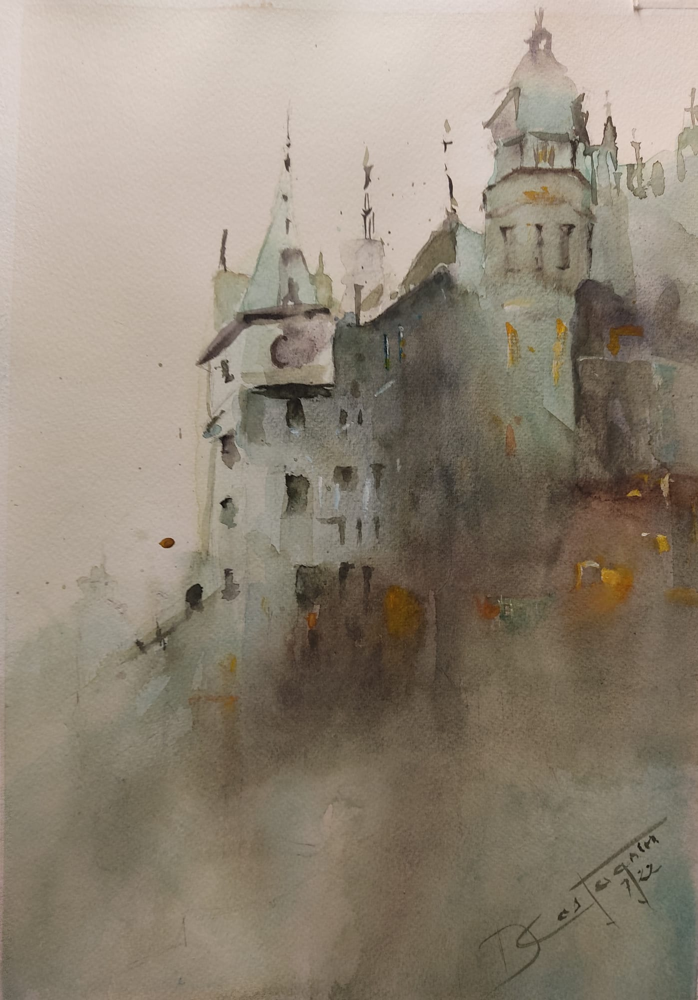
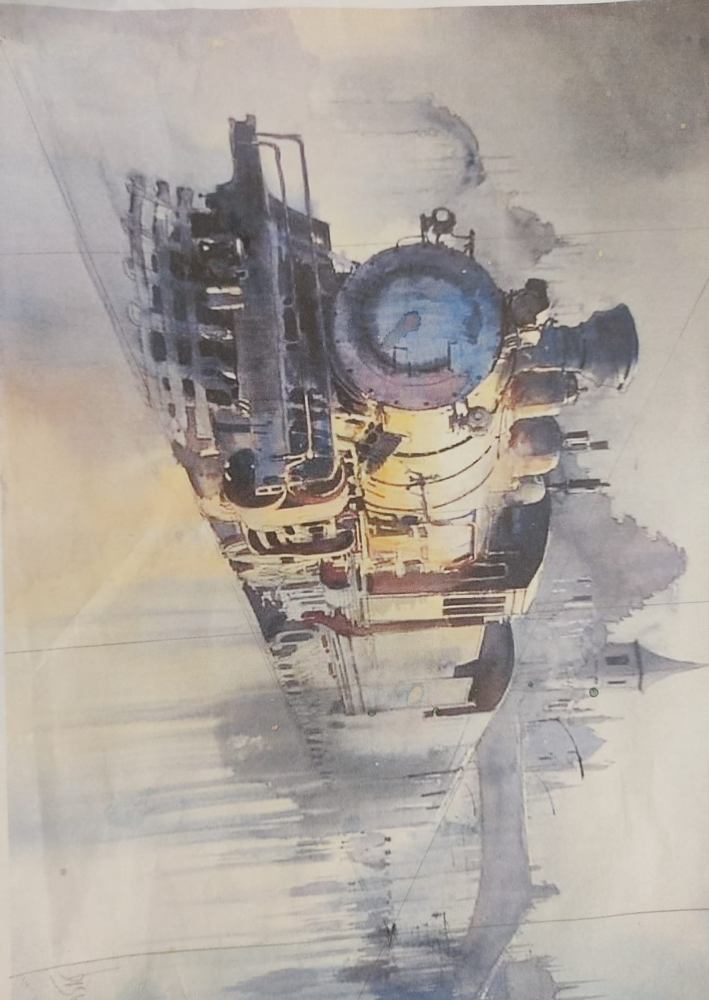
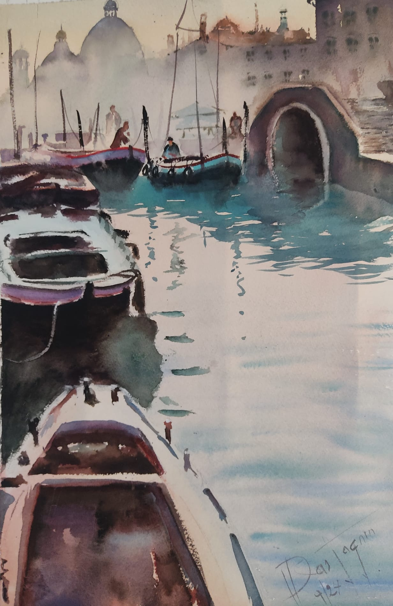

En un lugar del mundo.
Técnica: óleo en espátula. Medidas: 0.50 x 0.60 mt.

El viejo pescador.
Técnica hiperrealismo en óleo. Medidas: 0.40 x 0.50 mt.

Castillo medieval.
Técnica: acuarela. Medidas: 042 x 0.30 mt.

Locomotora en estación.
Técnica: acuarela. Medidas: 0.42 x 0.30 mt.

Paisaje de Venecia.
Técnica: acuarela. Medidas: 0.57 x 0.39
Mi Galeria

Sobre Mi!
Con pasion por el Arte
La pintura transporta, provoca sensaciones diferentes a quien la observa y transmite los sentimientos que tiene en ese momento el pintor.